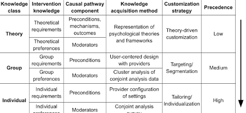

DISPLAY Lab is developing a knowledgebase to support automated message tailoring for clinical performance communication. The knowledgebase contains computer-interpretable description of resources for message tailoring and knowledge that is used to tailor messages. The key types of knowledge in the knowledgebase are:
1) How feedback messages work (causal pathway models), and
2)Information content of performance communication (performance levels, gaps, and trends)
3)Form of performance communication (message template library)
BackGround
Three ontologies are used to define and describe the elements of performance communication that are referenced in the knowledgebase. The Performance Summary Display Ontology (PSDO) defines the information content and form of performance communication. The Causal Pathway Ontology (CPO) defines the parts of a causal pathway model and their influence process. A third ontology functions as contains in-process working definitions and relationships that are important for message tailoring, but not yet well-defined enough to be placed in another ontology, called the Somewhat Lackadaisically Organized Working Miscellaneous Ontology (SLOWMO).
The content of the knowledgebase is displayed below, generated directly from computer-interpretable statements encoded in JSON. This page displays the work-in-progress content of the most recent version of the knowledgebase.